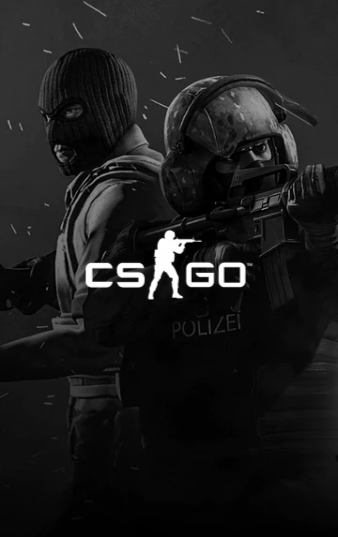
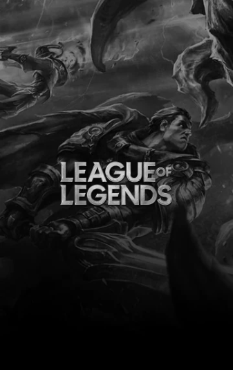
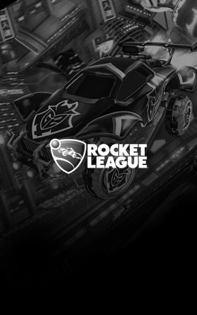

|  |  |  |
Definíció szerint két vagy több játékos, akik tudásukat vagy képességeiket felhasználva, megpróbálják legyőzni a másikat egy választott videojátékban. A játékok témája akármi lehet a sportszimulátoroktól kezdve, a stratégiai játékokon keresztül, a harci ütközetekig. A lényeg csak az, hogy a vetélkedés ne a gép, hanem egy másik játékos vagy csapat ellen történjen.
Az elektronikus sport (röviden e-sport) résztvevői amatőr vagy professzionális módon, versenyszerűen foglalkoznak az egyes videójátékokkal, ebből fakadóan a játékos megjelölés mellett e-sportolóknak is nevezik őket.
Az e-sporthoz tartozó leggyakoribb játékok műfajai a MOBA (online többjátékos csatamező), FPS (belsőnézetes lövöldözős játék), verekedős, kártyajátékok, battle royale és a valós idejű stratégiai játékok (RTS). A népszerű e-sport MOBA címek közé tartozik a Leauge of Legends, Dota 2, Smite. A belsőnézetes lövöldözős játékoknál (FPS) gyakran szerepel a Counter Strike Global Offensive, Rainbow Six Siege és a Call of Duty, melyek inkább a taktikai lövöldözős játékok kategóriájába tartoznak. A kártyajátékok közül az egyik legelterjedtebb pedig a Hearthstone, battle royale kategóriában pedig a PlayerUnknown's Battlegrounds.